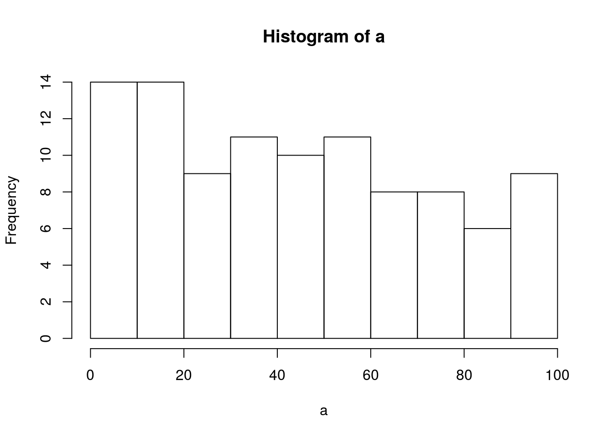
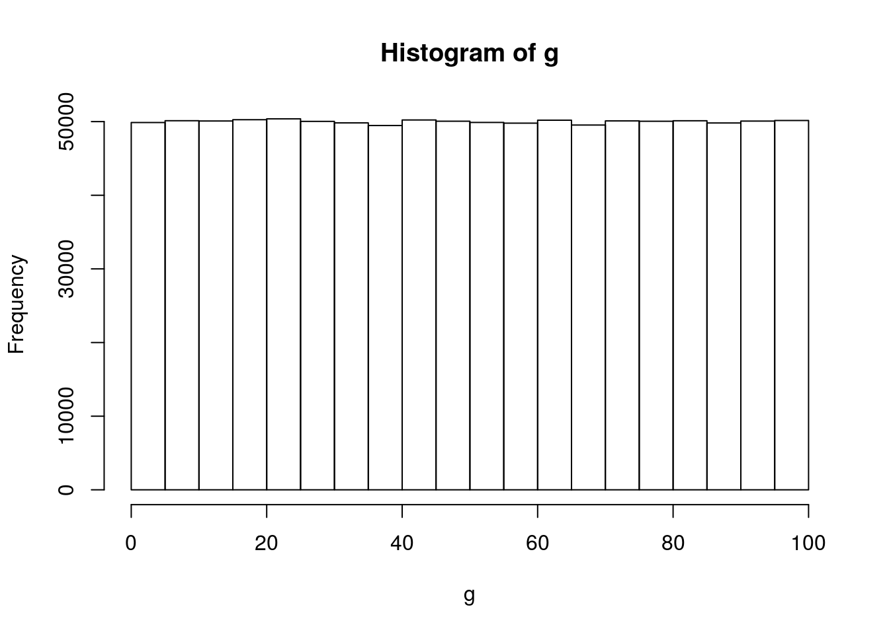

2019 | Feb | 23 Last compiled: 2019-05-13
samecheck<-function(a,b,c)
{
if(a==b&b==c&a==c&a!=0)
{
return(a)
}
return(0)
}
checkboard<-function(board)
{
for (i in 1:3)
{
res<-samecheck(board[i,1],board[i,2],board[i,3])
if (res!=0)
{
return(res)
}
}
for (i in 1:3)
{
res<-samecheck(board[1,i],board[2,i],board[3,i])
if (res!=0)
{
return(res)
}
}
dch<-diag(board)
res<-samecheck(dch[1],dch[2],dch[3])
if (res!=0)
{
return(res)
}
res<-samecheck(board[3,1],board[2,2],board[1,3])
if (res!=0)
{
return(res)
}
return(0)
}
board<-matrix(0,nrow=3,ncol=3)
#print(board)
possmoves<-list(c(1,1), c(1,2), c(1,3),
c(2,1), c(2,2), c(2,3),
c(3,1), c(3,2), c(3,3))
#print(possmoves)
for (i in 1:5)
{
player1<-sample(1:length(possmoves),1)
player1_c<-unlist(possmoves[player1])
#print(player1)
#print(unlist(player1)[1])
board[player1_c[1],player1_c[2]]=1
possmoves=possmoves[-player1]
print(board)
resu<-checkboard(board)
if (resu!=0)
{
break
}
player2<-sample(1:length(possmoves),1)
player2_c<-unlist(possmoves[player2])
#print(player2)
#print(unlist(player1)[1])
board[player2_c[1],player2_c[2]]=2
possmoves=possmoves[-player2]
print(board)
resu<-checkboard(board)
if (resu!=0)
{
break
}
}## [,1] [,2] [,3]
## [1,] 0 0 0
## [2,] 0 0 0
## [3,] 0 0 1
## [,1] [,2] [,3]
## [1,] 0 0 0
## [2,] 0 0 2
## [3,] 0 0 1
## [,1] [,2] [,3]
## [1,] 1 0 0
## [2,] 0 0 2
## [3,] 0 0 1
## [,1] [,2] [,3]
## [1,] 1 0 2
## [2,] 0 0 2
## [3,] 0 0 1
## [,1] [,2] [,3]
## [1,] 1 0 2
## [2,] 0 0 2
## [3,] 1 0 1
## [,1] [,2] [,3]
## [1,] 1 0 2
## [2,] 0 2 2
## [3,] 1 0 1
## [,1] [,2] [,3]
## [1,] 1 0 2
## [2,] 1 2 2
## [3,] 1 0 1wins<-0
draws<-0
if (print(resu)==1|print(resu)==2)
{
print("Player")
}## [1] 1
## [1] 1
## [1] "Player"if (print(resu)==0)
{
print("Draw")
}## [1] 1#print(board)2019 | Feb | 23 Last compiled: 2019-05-13
old_x<-0
new_x<-0
for (i in 99:1)
{
old_x<-i
new_x<-i-1
Sentence<-c(old_x,"bottles of beer on the wall",old_x,"bottles of beer Take one down, pass it around",new_x,"bottles of beer on the wall")
print(Sentence)
}## [1] "99"
## [2] "bottles of beer on the wall"
## [3] "99"
## [4] "bottles of beer Take one down, pass it around"
## [5] "98"
## [6] "bottles of beer on the wall"
## [1] "98"
## [2] "bottles of beer on the wall"
## [3] "98"
## [4] "bottles of beer Take one down, pass it around"
## [5] "97"
## [6] "bottles of beer on the wall"
## [1] "97"
## [2] "bottles of beer on the wall"
## [3] "97"
## [4] "bottles of beer Take one down, pass it around"
## [5] "96"
## [6] "bottles of beer on the wall"
## [1] "96"
## [2] "bottles of beer on the wall"
## [3] "96"
## [4] "bottles of beer Take one down, pass it around"
## [5] "95"
## [6] "bottles of beer on the wall"
## [1] "95"
## [2] "bottles of beer on the wall"
## [3] "95"
## [4] "bottles of beer Take one down, pass it around"
## [5] "94"
## [6] "bottles of beer on the wall"
## [1] "94"
## [2] "bottles of beer on the wall"
## [3] "94"
## [4] "bottles of beer Take one down, pass it around"
## [5] "93"
## [6] "bottles of beer on the wall"
## [1] "93"
## [2] "bottles of beer on the wall"
## [3] "93"
## [4] "bottles of beer Take one down, pass it around"
## [5] "92"
## [6] "bottles of beer on the wall"
## [1] "92"
## [2] "bottles of beer on the wall"
## [3] "92"
## [4] "bottles of beer Take one down, pass it around"
## [5] "91"
## [6] "bottles of beer on the wall"
## [1] "91"
## [2] "bottles of beer on the wall"
## [3] "91"
## [4] "bottles of beer Take one down, pass it around"
## [5] "90"
## [6] "bottles of beer on the wall"
## [1] "90"
## [2] "bottles of beer on the wall"
## [3] "90"
## [4] "bottles of beer Take one down, pass it around"
## [5] "89"
## [6] "bottles of beer on the wall"
## [1] "89"
## [2] "bottles of beer on the wall"
## [3] "89"
## [4] "bottles of beer Take one down, pass it around"
## [5] "88"
## [6] "bottles of beer on the wall"
## [1] "88"
## [2] "bottles of beer on the wall"
## [3] "88"
## [4] "bottles of beer Take one down, pass it around"
## [5] "87"
## [6] "bottles of beer on the wall"
## [1] "87"
## [2] "bottles of beer on the wall"
## [3] "87"
## [4] "bottles of beer Take one down, pass it around"
## [5] "86"
## [6] "bottles of beer on the wall"
## [1] "86"
## [2] "bottles of beer on the wall"
## [3] "86"
## [4] "bottles of beer Take one down, pass it around"
## [5] "85"
## [6] "bottles of beer on the wall"
## [1] "85"
## [2] "bottles of beer on the wall"
## [3] "85"
## [4] "bottles of beer Take one down, pass it around"
## [5] "84"
## [6] "bottles of beer on the wall"
## [1] "84"
## [2] "bottles of beer on the wall"
## [3] "84"
## [4] "bottles of beer Take one down, pass it around"
## [5] "83"
## [6] "bottles of beer on the wall"
## [1] "83"
## [2] "bottles of beer on the wall"
## [3] "83"
## [4] "bottles of beer Take one down, pass it around"
## [5] "82"
## [6] "bottles of beer on the wall"
## [1] "82"
## [2] "bottles of beer on the wall"
## [3] "82"
## [4] "bottles of beer Take one down, pass it around"
## [5] "81"
## [6] "bottles of beer on the wall"
## [1] "81"
## [2] "bottles of beer on the wall"
## [3] "81"
## [4] "bottles of beer Take one down, pass it around"
## [5] "80"
## [6] "bottles of beer on the wall"
## [1] "80"
## [2] "bottles of beer on the wall"
## [3] "80"
## [4] "bottles of beer Take one down, pass it around"
## [5] "79"
## [6] "bottles of beer on the wall"
## [1] "79"
## [2] "bottles of beer on the wall"
## [3] "79"
## [4] "bottles of beer Take one down, pass it around"
## [5] "78"
## [6] "bottles of beer on the wall"
## [1] "78"
## [2] "bottles of beer on the wall"
## [3] "78"
## [4] "bottles of beer Take one down, pass it around"
## [5] "77"
## [6] "bottles of beer on the wall"
## [1] "77"
## [2] "bottles of beer on the wall"
## [3] "77"
## [4] "bottles of beer Take one down, pass it around"
## [5] "76"
## [6] "bottles of beer on the wall"
## [1] "76"
## [2] "bottles of beer on the wall"
## [3] "76"
## [4] "bottles of beer Take one down, pass it around"
## [5] "75"
## [6] "bottles of beer on the wall"
## [1] "75"
## [2] "bottles of beer on the wall"
## [3] "75"
## [4] "bottles of beer Take one down, pass it around"
## [5] "74"
## [6] "bottles of beer on the wall"
## [1] "74"
## [2] "bottles of beer on the wall"
## [3] "74"
## [4] "bottles of beer Take one down, pass it around"
## [5] "73"
## [6] "bottles of beer on the wall"
## [1] "73"
## [2] "bottles of beer on the wall"
## [3] "73"
## [4] "bottles of beer Take one down, pass it around"
## [5] "72"
## [6] "bottles of beer on the wall"
## [1] "72"
## [2] "bottles of beer on the wall"
## [3] "72"
## [4] "bottles of beer Take one down, pass it around"
## [5] "71"
## [6] "bottles of beer on the wall"
## [1] "71"
## [2] "bottles of beer on the wall"
## [3] "71"
## [4] "bottles of beer Take one down, pass it around"
## [5] "70"
## [6] "bottles of beer on the wall"
## [1] "70"
## [2] "bottles of beer on the wall"
## [3] "70"
## [4] "bottles of beer Take one down, pass it around"
## [5] "69"
## [6] "bottles of beer on the wall"
## [1] "69"
## [2] "bottles of beer on the wall"
## [3] "69"
## [4] "bottles of beer Take one down, pass it around"
## [5] "68"
## [6] "bottles of beer on the wall"
## [1] "68"
## [2] "bottles of beer on the wall"
## [3] "68"
## [4] "bottles of beer Take one down, pass it around"
## [5] "67"
## [6] "bottles of beer on the wall"
## [1] "67"
## [2] "bottles of beer on the wall"
## [3] "67"
## [4] "bottles of beer Take one down, pass it around"
## [5] "66"
## [6] "bottles of beer on the wall"
## [1] "66"
## [2] "bottles of beer on the wall"
## [3] "66"
## [4] "bottles of beer Take one down, pass it around"
## [5] "65"
## [6] "bottles of beer on the wall"
## [1] "65"
## [2] "bottles of beer on the wall"
## [3] "65"
## [4] "bottles of beer Take one down, pass it around"
## [5] "64"
## [6] "bottles of beer on the wall"
## [1] "64"
## [2] "bottles of beer on the wall"
## [3] "64"
## [4] "bottles of beer Take one down, pass it around"
## [5] "63"
## [6] "bottles of beer on the wall"
## [1] "63"
## [2] "bottles of beer on the wall"
## [3] "63"
## [4] "bottles of beer Take one down, pass it around"
## [5] "62"
## [6] "bottles of beer on the wall"
## [1] "62"
## [2] "bottles of beer on the wall"
## [3] "62"
## [4] "bottles of beer Take one down, pass it around"
## [5] "61"
## [6] "bottles of beer on the wall"
## [1] "61"
## [2] "bottles of beer on the wall"
## [3] "61"
## [4] "bottles of beer Take one down, pass it around"
## [5] "60"
## [6] "bottles of beer on the wall"
## [1] "60"
## [2] "bottles of beer on the wall"
## [3] "60"
## [4] "bottles of beer Take one down, pass it around"
## [5] "59"
## [6] "bottles of beer on the wall"
## [1] "59"
## [2] "bottles of beer on the wall"
## [3] "59"
## [4] "bottles of beer Take one down, pass it around"
## [5] "58"
## [6] "bottles of beer on the wall"
## [1] "58"
## [2] "bottles of beer on the wall"
## [3] "58"
## [4] "bottles of beer Take one down, pass it around"
## [5] "57"
## [6] "bottles of beer on the wall"
## [1] "57"
## [2] "bottles of beer on the wall"
## [3] "57"
## [4] "bottles of beer Take one down, pass it around"
## [5] "56"
## [6] "bottles of beer on the wall"
## [1] "56"
## [2] "bottles of beer on the wall"
## [3] "56"
## [4] "bottles of beer Take one down, pass it around"
## [5] "55"
## [6] "bottles of beer on the wall"
## [1] "55"
## [2] "bottles of beer on the wall"
## [3] "55"
## [4] "bottles of beer Take one down, pass it around"
## [5] "54"
## [6] "bottles of beer on the wall"
## [1] "54"
## [2] "bottles of beer on the wall"
## [3] "54"
## [4] "bottles of beer Take one down, pass it around"
## [5] "53"
## [6] "bottles of beer on the wall"
## [1] "53"
## [2] "bottles of beer on the wall"
## [3] "53"
## [4] "bottles of beer Take one down, pass it around"
## [5] "52"
## [6] "bottles of beer on the wall"
## [1] "52"
## [2] "bottles of beer on the wall"
## [3] "52"
## [4] "bottles of beer Take one down, pass it around"
## [5] "51"
## [6] "bottles of beer on the wall"
## [1] "51"
## [2] "bottles of beer on the wall"
## [3] "51"
## [4] "bottles of beer Take one down, pass it around"
## [5] "50"
## [6] "bottles of beer on the wall"
## [1] "50"
## [2] "bottles of beer on the wall"
## [3] "50"
## [4] "bottles of beer Take one down, pass it around"
## [5] "49"
## [6] "bottles of beer on the wall"
## [1] "49"
## [2] "bottles of beer on the wall"
## [3] "49"
## [4] "bottles of beer Take one down, pass it around"
## [5] "48"
## [6] "bottles of beer on the wall"
## [1] "48"
## [2] "bottles of beer on the wall"
## [3] "48"
## [4] "bottles of beer Take one down, pass it around"
## [5] "47"
## [6] "bottles of beer on the wall"
## [1] "47"
## [2] "bottles of beer on the wall"
## [3] "47"
## [4] "bottles of beer Take one down, pass it around"
## [5] "46"
## [6] "bottles of beer on the wall"
## [1] "46"
## [2] "bottles of beer on the wall"
## [3] "46"
## [4] "bottles of beer Take one down, pass it around"
## [5] "45"
## [6] "bottles of beer on the wall"
## [1] "45"
## [2] "bottles of beer on the wall"
## [3] "45"
## [4] "bottles of beer Take one down, pass it around"
## [5] "44"
## [6] "bottles of beer on the wall"
## [1] "44"
## [2] "bottles of beer on the wall"
## [3] "44"
## [4] "bottles of beer Take one down, pass it around"
## [5] "43"
## [6] "bottles of beer on the wall"
## [1] "43"
## [2] "bottles of beer on the wall"
## [3] "43"
## [4] "bottles of beer Take one down, pass it around"
## [5] "42"
## [6] "bottles of beer on the wall"
## [1] "42"
## [2] "bottles of beer on the wall"
## [3] "42"
## [4] "bottles of beer Take one down, pass it around"
## [5] "41"
## [6] "bottles of beer on the wall"
## [1] "41"
## [2] "bottles of beer on the wall"
## [3] "41"
## [4] "bottles of beer Take one down, pass it around"
## [5] "40"
## [6] "bottles of beer on the wall"
## [1] "40"
## [2] "bottles of beer on the wall"
## [3] "40"
## [4] "bottles of beer Take one down, pass it around"
## [5] "39"
## [6] "bottles of beer on the wall"
## [1] "39"
## [2] "bottles of beer on the wall"
## [3] "39"
## [4] "bottles of beer Take one down, pass it around"
## [5] "38"
## [6] "bottles of beer on the wall"
## [1] "38"
## [2] "bottles of beer on the wall"
## [3] "38"
## [4] "bottles of beer Take one down, pass it around"
## [5] "37"
## [6] "bottles of beer on the wall"
## [1] "37"
## [2] "bottles of beer on the wall"
## [3] "37"
## [4] "bottles of beer Take one down, pass it around"
## [5] "36"
## [6] "bottles of beer on the wall"
## [1] "36"
## [2] "bottles of beer on the wall"
## [3] "36"
## [4] "bottles of beer Take one down, pass it around"
## [5] "35"
## [6] "bottles of beer on the wall"
## [1] "35"
## [2] "bottles of beer on the wall"
## [3] "35"
## [4] "bottles of beer Take one down, pass it around"
## [5] "34"
## [6] "bottles of beer on the wall"
## [1] "34"
## [2] "bottles of beer on the wall"
## [3] "34"
## [4] "bottles of beer Take one down, pass it around"
## [5] "33"
## [6] "bottles of beer on the wall"
## [1] "33"
## [2] "bottles of beer on the wall"
## [3] "33"
## [4] "bottles of beer Take one down, pass it around"
## [5] "32"
## [6] "bottles of beer on the wall"
## [1] "32"
## [2] "bottles of beer on the wall"
## [3] "32"
## [4] "bottles of beer Take one down, pass it around"
## [5] "31"
## [6] "bottles of beer on the wall"
## [1] "31"
## [2] "bottles of beer on the wall"
## [3] "31"
## [4] "bottles of beer Take one down, pass it around"
## [5] "30"
## [6] "bottles of beer on the wall"
## [1] "30"
## [2] "bottles of beer on the wall"
## [3] "30"
## [4] "bottles of beer Take one down, pass it around"
## [5] "29"
## [6] "bottles of beer on the wall"
## [1] "29"
## [2] "bottles of beer on the wall"
## [3] "29"
## [4] "bottles of beer Take one down, pass it around"
## [5] "28"
## [6] "bottles of beer on the wall"
## [1] "28"
## [2] "bottles of beer on the wall"
## [3] "28"
## [4] "bottles of beer Take one down, pass it around"
## [5] "27"
## [6] "bottles of beer on the wall"
## [1] "27"
## [2] "bottles of beer on the wall"
## [3] "27"
## [4] "bottles of beer Take one down, pass it around"
## [5] "26"
## [6] "bottles of beer on the wall"
## [1] "26"
## [2] "bottles of beer on the wall"
## [3] "26"
## [4] "bottles of beer Take one down, pass it around"
## [5] "25"
## [6] "bottles of beer on the wall"
## [1] "25"
## [2] "bottles of beer on the wall"
## [3] "25"
## [4] "bottles of beer Take one down, pass it around"
## [5] "24"
## [6] "bottles of beer on the wall"
## [1] "24"
## [2] "bottles of beer on the wall"
## [3] "24"
## [4] "bottles of beer Take one down, pass it around"
## [5] "23"
## [6] "bottles of beer on the wall"
## [1] "23"
## [2] "bottles of beer on the wall"
## [3] "23"
## [4] "bottles of beer Take one down, pass it around"
## [5] "22"
## [6] "bottles of beer on the wall"
## [1] "22"
## [2] "bottles of beer on the wall"
## [3] "22"
## [4] "bottles of beer Take one down, pass it around"
## [5] "21"
## [6] "bottles of beer on the wall"
## [1] "21"
## [2] "bottles of beer on the wall"
## [3] "21"
## [4] "bottles of beer Take one down, pass it around"
## [5] "20"
## [6] "bottles of beer on the wall"
## [1] "20"
## [2] "bottles of beer on the wall"
## [3] "20"
## [4] "bottles of beer Take one down, pass it around"
## [5] "19"
## [6] "bottles of beer on the wall"
## [1] "19"
## [2] "bottles of beer on the wall"
## [3] "19"
## [4] "bottles of beer Take one down, pass it around"
## [5] "18"
## [6] "bottles of beer on the wall"
## [1] "18"
## [2] "bottles of beer on the wall"
## [3] "18"
## [4] "bottles of beer Take one down, pass it around"
## [5] "17"
## [6] "bottles of beer on the wall"
## [1] "17"
## [2] "bottles of beer on the wall"
## [3] "17"
## [4] "bottles of beer Take one down, pass it around"
## [5] "16"
## [6] "bottles of beer on the wall"
## [1] "16"
## [2] "bottles of beer on the wall"
## [3] "16"
## [4] "bottles of beer Take one down, pass it around"
## [5] "15"
## [6] "bottles of beer on the wall"
## [1] "15"
## [2] "bottles of beer on the wall"
## [3] "15"
## [4] "bottles of beer Take one down, pass it around"
## [5] "14"
## [6] "bottles of beer on the wall"
## [1] "14"
## [2] "bottles of beer on the wall"
## [3] "14"
## [4] "bottles of beer Take one down, pass it around"
## [5] "13"
## [6] "bottles of beer on the wall"
## [1] "13"
## [2] "bottles of beer on the wall"
## [3] "13"
## [4] "bottles of beer Take one down, pass it around"
## [5] "12"
## [6] "bottles of beer on the wall"
## [1] "12"
## [2] "bottles of beer on the wall"
## [3] "12"
## [4] "bottles of beer Take one down, pass it around"
## [5] "11"
## [6] "bottles of beer on the wall"
## [1] "11"
## [2] "bottles of beer on the wall"
## [3] "11"
## [4] "bottles of beer Take one down, pass it around"
## [5] "10"
## [6] "bottles of beer on the wall"
## [1] "10"
## [2] "bottles of beer on the wall"
## [3] "10"
## [4] "bottles of beer Take one down, pass it around"
## [5] "9"
## [6] "bottles of beer on the wall"
## [1] "9"
## [2] "bottles of beer on the wall"
## [3] "9"
## [4] "bottles of beer Take one down, pass it around"
## [5] "8"
## [6] "bottles of beer on the wall"
## [1] "8"
## [2] "bottles of beer on the wall"
## [3] "8"
## [4] "bottles of beer Take one down, pass it around"
## [5] "7"
## [6] "bottles of beer on the wall"
## [1] "7"
## [2] "bottles of beer on the wall"
## [3] "7"
## [4] "bottles of beer Take one down, pass it around"
## [5] "6"
## [6] "bottles of beer on the wall"
## [1] "6"
## [2] "bottles of beer on the wall"
## [3] "6"
## [4] "bottles of beer Take one down, pass it around"
## [5] "5"
## [6] "bottles of beer on the wall"
## [1] "5"
## [2] "bottles of beer on the wall"
## [3] "5"
## [4] "bottles of beer Take one down, pass it around"
## [5] "4"
## [6] "bottles of beer on the wall"
## [1] "4"
## [2] "bottles of beer on the wall"
## [3] "4"
## [4] "bottles of beer Take one down, pass it around"
## [5] "3"
## [6] "bottles of beer on the wall"
## [1] "3"
## [2] "bottles of beer on the wall"
## [3] "3"
## [4] "bottles of beer Take one down, pass it around"
## [5] "2"
## [6] "bottles of beer on the wall"
## [1] "2"
## [2] "bottles of beer on the wall"
## [3] "2"
## [4] "bottles of beer Take one down, pass it around"
## [5] "1"
## [6] "bottles of beer on the wall"
## [1] "1"
## [2] "bottles of beer on the wall"
## [3] "1"
## [4] "bottles of beer Take one down, pass it around"
## [5] "0"
## [6] "bottles of beer on the wall"2019 | Feb | 23 Last compiled: 2019-05-13
doors<-rep(0,100)
for(i in 1:100)
{
for(j in seq(i,100,by=i))
{
if(doors[j]==0)
{
doors[j]<-1
}
else
{
doors[j]<-0
}
}
}
print(doors)## [1] 1 0 0 1 0 0 0 0 1 0 0 0 0 0 0 1 0 0 0 0 0 0 0 0 1 0 0 0 0 0 0 0 0 0 0
## [36] 1 0 0 0 0 0 0 0 0 0 0 0 0 1 0 0 0 0 0 0 0 0 0 0 0 0 0 0 1 0 0 0 0 0 0
## [71] 0 0 0 0 0 0 0 0 0 0 1 0 0 0 0 0 0 0 0 0 0 0 0 0 0 0 0 0 0 12019 | Feb | 23 Last compiled: 2019-05-13
#doesn'tswitch
win<-0
tries<-1:200
for (i in tries)
{
curtains<-c(1,0,0)
choice<-sample(curtains,1)
#print(choice)
win<-win+choice
#print(win)
}
win/200## [1] 0.37#switches
switchs<-0
chances<-1:200
for(i in chances)
{
curtains<-c(1,0,0)
choice<-sample(curtains,1)
if(choice==0)
{
choice<-1
}
else
{
choice=0
}
switchs<-switchs+choice
}
#print(switchs)
switchs/200## [1] 0.652019 | Feb | 23 Last compiled: 2019-05-13
rolldice<-function()
{
die1<-sample(c(1,2,3,4,5,6),1)
die2<-sample(c(1,2,3,4,5,6),1)
roll<-die1+die2
return(roll)
}
result<-rep(0,12)
for (i in 1:200)
{
nroll<-rolldice()
result[nroll]=result[nroll]+1
}
for(i in 1:12)
{
#print(c(i,(result[i]/200)))
cat(sprintf("Number %d with %f probability\n", i, result[i]/200))
}## Number 1 with 0.000000 probability
## Number 2 with 0.020000 probability
## Number 3 with 0.070000 probability
## Number 4 with 0.070000 probability
## Number 5 with 0.095000 probability
## Number 6 with 0.125000 probability
## Number 7 with 0.130000 probability
## Number 8 with 0.155000 probability
## Number 9 with 0.135000 probability
## Number 10 with 0.115000 probability
## Number 11 with 0.060000 probability
## Number 12 with 0.025000 probability2019 | Feb | 23 Last compiled: 2019-05-13
SnakesLadders<-function()
{
ladders<-data.frame(start=c(1,4,9,21,28,36,51,71,80),end=c(37,14,31,42,84,44,67,91,100))
slides<-data.frame(start=c(98,95,93,87,64,62,56,49,47,16), end=c(78,75,73,24,60,19,53,11,26,6))
#print(ladders)
#print(slides)
loc<-0
nroll<-0
slide<-0
ladder<-0
while(loc<=100)
{
die<-sample(c(1,2,3,4,5,6),1)
loc<-loc+die
nroll<-nroll+1
if(any(ladders$start %in% loc))
{
loc<-ladders$end[ladders$start %in% loc]
ladder<- ladder+1
}
if(any(slides$start %in% loc))
{
loc<-slides$end[slides$start %in% loc]
slide<-slide+1
}
#print(c(loc,die))
}
return(nroll)
}
totnroll<-0
for(i in 1:1000)
{
totnroll<-totnroll+SnakesLadders()
}
print(totnroll/1000)## [1] 37.5152019 | Feb | 23 Last compiled: 2019-05-13
alp<-"abcdefghijklmnopqrstuvwxyz"
alph<-strsplit(alp,"")[[1]]
#print(alph)
scralph<-sample(alph)
#print(scralph)
encrypkey<-data.frame(alph,scralph)
#print(encrypkey[,3])
encryption<-function(input,key)
{
enc_alph<-c()
for(i in 1:length(input))
{
o_alph<-input[i]
#print(o_alph)
n_alph <- as.character(key[key$alph==o_alph,]$scralph)
#print(c(o_alph, n_alph))
enc_alph[i]<-n_alph
#print(enc_alph)
}
return(enc_alph)
}
deencryption<-function(input,key)
{
denc_alph<-c()
for(i in 1:length(input))
{
c_alph<-input[i]
d_alph<-as.character(key[key$scralph==c_alph,]$alph)
denc_alph[i]<-d_alph
}
return(denc_alph)
}
code<-encryption(alph,encrypkey)
print(code)## [1] "k" "j" "a" "n" "g" "c" "l" "o" "q" "i" "e" "u" "z" "w" "x" "s" "p"
## [18] "r" "t" "m" "v" "b" "h" "f" "d" "y"deencryption(code,encrypkey)## [1] "a" "b" "c" "d" "e" "f" "g" "h" "i" "j" "k" "l" "m" "n" "o" "p" "q"
## [18] "r" "s" "t" "u" "v" "w" "x" "y" "z"2019 | Feb | 23 Last compiled: 2019-05-13
r<-1:10
names(r)<-r
a<-r%o%r
print(a)## 1 2 3 4 5 6 7 8 9 10
## 1 1 2 3 4 5 6 7 8 9 10
## 2 2 4 6 8 10 12 14 16 18 20
## 3 3 6 9 12 15 18 21 24 27 30
## 4 4 8 12 16 20 24 28 32 36 40
## 5 5 10 15 20 25 30 35 40 45 50
## 6 6 12 18 24 30 36 42 48 54 60
## 7 7 14 21 28 35 42 49 56 63 70
## 8 8 16 24 32 40 48 56 64 72 80
## 9 9 18 27 36 45 54 63 72 81 90
## 10 10 20 30 40 50 60 70 80 90 100matrix(a,ncol = 10,nrow = 10)## [,1] [,2] [,3] [,4] [,5] [,6] [,7] [,8] [,9] [,10]
## [1,] 1 2 3 4 5 6 7 8 9 10
## [2,] 2 4 6 8 10 12 14 16 18 20
## [3,] 3 6 9 12 15 18 21 24 27 30
## [4,] 4 8 12 16 20 24 28 32 36 40
## [5,] 5 10 15 20 25 30 35 40 45 50
## [6,] 6 12 18 24 30 36 42 48 54 60
## [7,] 7 14 21 28 35 42 49 56 63 70
## [8,] 8 16 24 32 40 48 56 64 72 80
## [9,] 9 18 27 36 45 54 63 72 81 90
## [10,] 10 20 30 40 50 60 70 80 90 1002019 | Feb | 23 Last compiled: 2019-05-13
a<-floor(runif(100,min=0,max=100))
hist(a)
b<-sort(unique(a))
#print(b)
c<-unlist(list(rep(0,length(b))))
#print(c)
for(i in a)
{
d<-match(i,b)
c[d]=c[d]+1
}
#print(c)
for(i in 1:length(b))
{
print.table(c(b[i],c[i]))
}## [1] 0 2
## [1] 1 2
## [1] 3 2
## [1] 4 2
## [1] 5 2
## [1] 6 1
## [1] 8 2
## [1] 10 1
## [1] 11 2
## [1] 12 3
## [1] 15 1
## [1] 16 3
## [1] 17 2
## [1] 19 1
## [1] 20 2
## [1] 21 2
## [1] 22 1
## [1] 23 1
## [1] 25 1
## [1] 27 4
## [1] 31 2
## [1] 33 2
## [1] 36 2
## [1] 37 2
## [1] 39 1
## [1] 40 2
## [1] 41 1
## [1] 43 2
## [1] 44 1
## [1] 45 2
## [1] 46 1
## [1] 49 1
## [1] 50 2
## [1] 52 2
## [1] 53 1
## [1] 54 1
## [1] 55 1
## [1] 56 4
## [1] 60 2
## [1] 61 1
## [1] 62 2
## [1] 64 2
## [1] 65 1
## [1] 67 1
## [1] 69 1
## [1] 73 1
## [1] 77 1
## [1] 78 4
## [1] 80 2
## [1] 81 1
## [1] 82 1
## [1] 83 1
## [1] 85 2
## [1] 88 1
## [1] 93 1
## [1] 94 3
## [1] 95 1
## [1] 96 1
## [1] 97 1
## [1] 98 2g<-runif(10^6,min=0,max=100)
hist(g)
2019 | Feb | 23 Last compiled: 2019-05-13
a<-"all you need to do is completely make an ass of yourself and laugh it off to realise that life is not so bad after all."
b<-unlist(strsplit(a,split = ""))
#print(b)
c<-unique(b)
#print(c)
d<-unlist(list(rep(0,length(c))))
#print(length(d))
for(i in b)
{
e<-match(i,c)
d[e]=d[e]+1
}
#print(d)
#print(c)
for (i in 1:length(c))
{
print(c(c[i],d[i]))
}## [1] "a" "11"
## [1] "l" "10"
## [1] " " "25"
## [1] "y" "3"
## [1] "o" "10"
## [1] "u" "3"
## [1] "n" "4"
## [1] "e" "10"
## [1] "d" "4"
## [1] "t" "8"
## [1] "i" "5"
## [1] "s" "7"
## [1] "c" "1"
## [1] "m" "2"
## [1] "p" "1"
## [1] "k" "1"
## [1] "f" "6"
## [1] "r" "3"
## [1] "g" "1"
## [1] "h" "2"
## [1] "b" "1"
## [1] "." "1"2019 | Feb | 23 Last compiled: 2019-05-13
a<-seq(1,100,1)
for (i in a)
{
if(i%%3==0 & i%%5==0)
{
i<-"FizzBuzz"
print(i)
}
else if(i%%5==0)
{
i<-"Buzz"
print(i)
}
else if(i%%3==0)
{
i<-"Fizz"
print(i)
}
else if(i)
{
print(i)
}
}## [1] 1
## [1] 2
## [1] "Fizz"
## [1] 4
## [1] "Buzz"
## [1] "Fizz"
## [1] 7
## [1] 8
## [1] "Fizz"
## [1] "Buzz"
## [1] 11
## [1] "Fizz"
## [1] 13
## [1] 14
## [1] "FizzBuzz"
## [1] 16
## [1] 17
## [1] "Fizz"
## [1] 19
## [1] "Buzz"
## [1] "Fizz"
## [1] 22
## [1] 23
## [1] "Fizz"
## [1] "Buzz"
## [1] 26
## [1] "Fizz"
## [1] 28
## [1] 29
## [1] "FizzBuzz"
## [1] 31
## [1] 32
## [1] "Fizz"
## [1] 34
## [1] "Buzz"
## [1] "Fizz"
## [1] 37
## [1] 38
## [1] "Fizz"
## [1] "Buzz"
## [1] 41
## [1] "Fizz"
## [1] 43
## [1] 44
## [1] "FizzBuzz"
## [1] 46
## [1] 47
## [1] "Fizz"
## [1] 49
## [1] "Buzz"
## [1] "Fizz"
## [1] 52
## [1] 53
## [1] "Fizz"
## [1] "Buzz"
## [1] 56
## [1] "Fizz"
## [1] 58
## [1] 59
## [1] "FizzBuzz"
## [1] 61
## [1] 62
## [1] "Fizz"
## [1] 64
## [1] "Buzz"
## [1] "Fizz"
## [1] 67
## [1] 68
## [1] "Fizz"
## [1] "Buzz"
## [1] 71
## [1] "Fizz"
## [1] 73
## [1] 74
## [1] "FizzBuzz"
## [1] 76
## [1] 77
## [1] "Fizz"
## [1] 79
## [1] "Buzz"
## [1] "Fizz"
## [1] 82
## [1] 83
## [1] "Fizz"
## [1] "Buzz"
## [1] 86
## [1] "Fizz"
## [1] 88
## [1] 89
## [1] "FizzBuzz"
## [1] 91
## [1] 92
## [1] "Fizz"
## [1] 94
## [1] "Buzz"
## [1] "Fizz"
## [1] 97
## [1] 98
## [1] "Fizz"
## [1] "Buzz"2019 | Feb | 23 Last compiled: 2019-05-13
here<-matrix(floor(runif(100, min = 1,max = 100)),nrow = 20,ncol = 20)
tmpfil<-tempfile("data")
write.table(here,tmpfil)
read.table(tmpfil)## V1 V2 V3 V4 V5 V6 V7 V8 V9 V10 V11 V12 V13 V14 V15 V16 V17 V18 V19 V20
## 1 48 54 95 33 91 48 54 95 33 91 48 54 95 33 91 48 54 95 33 91
## 2 40 19 36 86 34 40 19 36 86 34 40 19 36 86 34 40 19 36 86 34
## 3 9 93 55 36 82 9 93 55 36 82 9 93 55 36 82 9 93 55 36 82
## 4 5 40 93 14 31 5 40 93 14 31 5 40 93 14 31 5 40 93 14 31
## 5 75 55 97 33 97 75 55 97 33 97 75 55 97 33 97 75 55 97 33 97
## 6 44 93 53 54 77 44 93 53 54 77 44 93 53 54 77 44 93 53 54 77
## 7 67 71 54 72 27 67 71 54 72 27 67 71 54 72 27 67 71 54 72 27
## 8 92 25 9 27 96 92 25 9 27 96 92 25 9 27 96 92 25 9 27 96
## 9 26 48 43 97 28 26 48 43 97 28 26 48 43 97 28 26 48 43 97 28
## 10 67 71 85 32 4 67 71 85 32 4 67 71 85 32 4 67 71 85 32 4
## 11 51 5 35 40 58 51 5 35 40 58 51 5 35 40 58 51 5 35 40 58
## 12 49 26 17 43 82 49 26 17 43 82 49 26 17 43 82 49 26 17 43 82
## 13 85 91 15 16 3 85 91 15 16 3 85 91 15 16 3 85 91 15 16 3
## 14 1 89 64 56 75 1 89 64 56 75 1 89 64 56 75 1 89 64 56 75
## 15 9 51 87 36 97 9 51 87 36 97 9 51 87 36 97 9 51 87 36 97
## 16 95 28 22 6 89 95 28 22 6 89 95 28 22 6 89 95 28 22 6 89
## 17 30 24 20 93 33 30 24 20 93 33 30 24 20 93 33 30 24 20 93 33
## 18 22 95 46 33 54 22 95 46 33 54 22 95 46 33 54 22 95 46 33 54
## 19 82 61 77 37 23 82 61 77 37 23 82 61 77 37 23 82 61 77 37 23
## 20 70 28 99 78 25 70 28 99 78 25 70 28 99 78 25 70 28 99 78 25here2<-matrix(floor(runif(100, min = 1,max = 100)),nrow = 20,ncol = 20)
tmpfil2<-tempfile("data")
write.csv(here2,tmpfil2,row.names = FALSE,col.names = F)
read.csv(tmpfil2)## V1 V2 V3 V4 V5 V6 V7 V8 V9 V10 V11 V12 V13 V14 V15 V16 V17 V18 V19 V20
## 1 29 85 50 35 64 29 85 50 35 64 29 85 50 35 64 29 85 50 35 64
## 2 76 77 74 95 50 76 77 74 95 50 76 77 74 95 50 76 77 74 95 50
## 3 55 49 70 57 52 55 49 70 57 52 55 49 70 57 52 55 49 70 57 52
## 4 70 45 78 87 20 70 45 78 87 20 70 45 78 87 20 70 45 78 87 20
## 5 15 25 86 50 46 15 25 86 50 46 15 25 86 50 46 15 25 86 50 46
## 6 98 53 70 14 93 98 53 70 14 93 98 53 70 14 93 98 53 70 14 93
## 7 92 53 61 97 78 92 53 61 97 78 92 53 61 97 78 92 53 61 97 78
## 8 44 25 8 50 51 44 25 8 50 51 44 25 8 50 51 44 25 8 50 51
## 9 85 35 47 45 93 85 35 47 45 93 85 35 47 45 93 85 35 47 45 93
## 10 69 82 34 39 89 69 82 34 39 89 69 82 34 39 89 69 82 34 39 89
## 11 52 48 94 38 69 52 48 94 38 69 52 48 94 38 69 52 48 94 38 69
## 12 75 29 45 14 44 75 29 45 14 44 75 29 45 14 44 75 29 45 14 44
## 13 54 67 64 25 74 54 67 64 25 74 54 67 64 25 74 54 67 64 25 74
## 14 99 90 59 22 16 99 90 59 22 16 99 90 59 22 16 99 90 59 22 16
## 15 7 43 22 43 82 7 43 22 43 82 7 43 22 43 82 7 43 22 43 82
## 16 86 38 42 87 75 86 38 42 87 75 86 38 42 87 75 86 38 42 87 75
## 17 5 41 62 51 73 5 41 62 51 73 5 41 62 51 73 5 41 62 51 73
## 18 40 88 49 19 52 40 88 49 19 52 40 88 49 19 52 40 88 49 19 52
## 19 46 71 43 39 70 46 71 43 39 70 46 71 43 39 70 46 71 43 39 70
## 20 64 58 17 63 54 64 58 17 63 54 64 58 17 63 54 64 58 17 63 542019 | Feb | 23 Last compiled: 2019-05-13
here<-matrix(floor(runif(100, min = 1,max = 100)),nrow = 20,ncol = 20)
print(here)## [,1] [,2] [,3] [,4] [,5] [,6] [,7] [,8] [,9] [,10] [,11] [,12] [,13]
## [1,] 94 90 14 60 68 94 90 14 60 68 94 90 14
## [2,] 20 47 8 68 58 20 47 8 68 58 20 47 8
## [3,] 98 81 67 39 11 98 81 67 39 11 98 81 67
## [4,] 91 47 62 96 46 91 47 62 96 46 91 47 62
## [5,] 46 41 79 9 41 46 41 79 9 41 46 41 79
## [6,] 91 78 14 2 69 91 78 14 2 69 91 78 14
## [7,] 25 11 50 9 9 25 11 50 9 9 25 11 50
## [8,] 10 5 69 83 59 10 5 69 83 59 10 5 69
## [9,] 26 25 59 50 24 26 25 59 50 24 26 25 59
## [10,] 9 47 19 15 29 9 47 19 15 29 9 47 19
## [11,] 97 20 45 97 69 97 20 45 97 69 97 20 45
## [12,] 39 7 23 58 85 39 7 23 58 85 39 7 23
## [13,] 30 94 67 95 99 30 94 67 95 99 30 94 67
## [14,] 99 57 69 18 82 99 57 69 18 82 99 57 69
## [15,] 69 12 18 20 27 69 12 18 20 27 69 12 18
## [16,] 16 40 77 98 75 16 40 77 98 75 16 40 77
## [17,] 67 19 39 84 1 67 19 39 84 1 67 19 39
## [18,] 26 35 53 44 97 26 35 53 44 97 26 35 53
## [19,] 74 45 20 49 26 74 45 20 49 26 74 45 20
## [20,] 72 45 95 59 17 72 45 95 59 17 72 45 95
## [,14] [,15] [,16] [,17] [,18] [,19] [,20]
## [1,] 60 68 94 90 14 60 68
## [2,] 68 58 20 47 8 68 58
## [3,] 39 11 98 81 67 39 11
## [4,] 96 46 91 47 62 96 46
## [5,] 9 41 46 41 79 9 41
## [6,] 2 69 91 78 14 2 69
## [7,] 9 9 25 11 50 9 9
## [8,] 83 59 10 5 69 83 59
## [9,] 50 24 26 25 59 50 24
## [10,] 15 29 9 47 19 15 29
## [11,] 97 69 97 20 45 97 69
## [12,] 58 85 39 7 23 58 85
## [13,] 95 99 30 94 67 95 99
## [14,] 18 82 99 57 69 18 82
## [15,] 20 27 69 12 18 20 27
## [16,] 98 75 16 40 77 98 75
## [17,] 84 1 67 19 39 84 1
## [18,] 44 97 26 35 53 44 97
## [19,] 49 26 74 45 20 49 26
## [20,] 59 17 72 45 95 59 172019 | Feb | 23 Last compiled: 2019-05-13
x<-matrix(1:10, ncol = 5)
fil<-tempfile("data")
write(x,fil)
read.csv(fil)## X1.2.3.4.5
## 1 6 7 8 9 102019 | Feb | 23 Last compiled: 2019-05-13
tfile<-read.delim("http://www.sthda.com/upload/boxplot_format.txt")
t2file<-read.delim("https://www.w3schools.com/tags/tag_input.asp")
head(tfile)## Nom variable Group
## 1 IND1 10 A
## 2 IND2 7 A
## 3 IND3 20 A
## 4 IND4 14 A
## 5 IND5 14 A
## 6 IND6 12 Ahead(t2file)## X..DOCTYPE.html.
## 1 <html lang=en-US>
## 2 <head>
## 3 <title>HTML input tag</title>
## 4 <meta charset=utf-8>
## 5 <meta name=viewport content=width=device-width, initial-scale=1>
## 6 <meta name=Keywords content=HTML,CSS,JavaScript,SQL,PHP,jQuery,XML,DOM,Bootstrap,Python,Web development,W3C,tutorials,programming,training,learning,quiz,primer,lessons,references,examples,exercises,source code,colors,demos,tips>2019 | Feb | 23 Last compiled: 2019-05-13
t1<-Sys.time()
a<-"The sky is clear; the stars are twinkling.
She always speaks to him in a loud voice.
The book is in front of the table.
I would have gotten the promotion, but my attendance wasn’t good enough.
If you like tuna and tomato sauce- try combining the two. It’s really not as bad as it sounds."
b<-unlist(strsplit(a,split = "e"))
length(b)-1## [1] 20t2<-Sys.time()
runtime<-t2-t1
print(runtime)## Time difference of 0.003956318 secs2019 | Feb | 23 Last compiled: 2019-05-13
curr.time<-(as.numeric(Sys.time()))*1000
print(curr.time,digits=15)## [1] 1550984222154.052019 | Feb | 19 Last compiled: 2019-05-13
a<-"I was very proud of my nickname throughout high school but today- I couldn’t be any different to what my nickname was."
c<-unlist(strsplit(a,split = " "))
b<-"nickname"
b%in%c## [1] TRUEb%in%a #not sure why this doesn't work yet...## [1] FALSEtest_word <- "hello"
test_sentence <-"is the word hello in this sentence"
test_word%in%test_sentence #Shouldershrugs## [1] FALSE2019 | Feb | 19 Last compiled: 2019-05-13
a<-"The sky is clear; the stars are twinkling.
She always speaks to him in a loud voice.
The book is in front of the table.
I would have gotten the promotion, but my attendance wasn’t good enough.
If you like tuna and tomato sauce- try combining the two. It’s really not as bad as it sounds."
b<-unlist(strsplit(a,split = "e"))
print(b)## [1] "Th" " sky is cl"
## [3] "ar; th" " stars ar"
## [5] " twinkling.\nSh" " always sp"
## [7] "aks to him in a loud voic" ".\nTh"
## [9] " book is in front of th" " tabl"
## [11] ".\nI would hav" " gott"
## [13] "n th" " promotion, but my att"
## [15] "ndanc" " wasn’t good "
## [17] "nough.\nIf you lik" " tuna and tomato sauc"
## [19] "- try combining th" " two. It’s r"
## [21] "ally not as bad as it sounds."length(b)-1## [1] 202019 | Feb | 19 Last compiled: 2019-05-13
a<-"Christmas is coming.
I want to buy a onesie… but know it won’t suit me.
She borrowed the book from him many years ago and hasn't yet returned it.
If the Easter Bunny and the Tooth Fairy had babies would they take your teeth and leave chocolate for you?
Check back tomorrow; I will see if the book has arrived.
Cats are good pets, for they are clean and are not noisy.
This is the last random sentence I will be writing and I am going to stop mid-sent
We have never been to Asia, nor have we visited Africa.
The river stole the gods.
She always speaks to him in a loud voice."
b<-unlist(strsplit(a,split = "[.?]"))
print(b)## [1] "Christmas is coming"
## [2] "\nI want to buy a onesie… but know it won’t suit me"
## [3] "\nShe borrowed the book from him many years ago and hasn't yet returned it"
## [4] "\nIf the Easter Bunny and the Tooth Fairy had babies would they take your teeth and leave chocolate for you"
## [5] "\nCheck back tomorrow; I will see if the book has arrived"
## [6] "\nCats are good pets, for they are clean and are not noisy"
## [7] "\nThis is the last random sentence I will be writing and I am going to stop mid-sent\nWe have never been to Asia, nor have we visited Africa"
## [8] "\nThe river stole the gods"
## [9] "\nShe always speaks to him in a loud voice"length(b)## [1] 92019 | Feb | 19 Last compiled: 2019-05-13
a<-"Writing a list of random sentences is harder than I initially thought it would be."
b<-unlist(strsplit(a,split = " "))
length(b)## [1] 152019 | Feb | 19 Last compiled: 2019-05-13
a<-"adskfjhkadsjfh"
b<-unlist(strsplit(a,split = ""))
print(b)## [1] "a" "d" "s" "k" "f" "j" "h" "k" "a" "d" "s" "j" "f" "h"length(b)## [1] 142019 | Feb | 19 Last compiled: 2019-05-13
my_mean<-function(x)
{
return(sum(x)/length(x))
}
t<-c(1:20)
my_mean(t)## [1] 10.5my_mode<-function(x)
{
a<-sort(x)
b<-unique(a)
maxn<-0
countn<-0
for (i in b)
{
c<-a[a==i]
if(length(c)>countn)
{
maxn=i
countn=length(c)
}
}
return(maxn)
}
my_mode(c(1,1,1,10,9,8,8,5,5,5,5))## [1] 5my_median<-function(x)
{
a<-sort(x)
b<-length(x)
c<-floor(b/2)
if(b%%2==0)
{
return(mean(c(a[c],a[c+1])))
}
else
{
return(a[c+1])
}
}
my_median(c(1,2,3,4,5))## [1] 3my_median(1:10)## [1] 5.5my_range<-function(x)
{
sort(x)
print(c(min(x),max(x)))
}
my_range(c(1,1,1,10,9,8,8,5,5,5,5))## [1] 1 10my_sd<-function(x)
{
avgx<-mean(x)
sd<-0
for (i in x)
{
sd<-(i-avgx)^2 + sd
}
return(sqrt(sd/(length(x)-1)))
}
my_sd(c(-5,1,8,7,2))## [1] 5.224942019 | Feb | 19 Last compiled: 2019-05-13
#prints all numbers
runif(100, min = 1,max = 100)## [1] 73.838057 81.605615 71.599426 66.857405 14.218151 81.249551 56.354551
## [8] 15.492613 15.834065 21.876235 23.323300 40.422932 5.384984 62.175257
## [15] 1.986353 51.033348 5.759674 87.256152 20.234216 70.082167 69.336437
## [22] 11.026656 65.008361 28.015248 60.898433 26.865837 2.425780 21.185972
## [29] 79.881336 61.856358 46.318740 59.802683 93.486499 97.902200 36.764576
## [36] 27.096738 23.649237 76.023442 35.505783 13.293733 68.603841 75.043934
## [43] 28.049898 76.874063 89.790460 83.362531 22.262597 38.964857 33.242863
## [50] 89.047042 80.159026 67.029010 71.305758 2.359133 13.400311 88.344799
## [57] 48.277432 99.760441 21.304041 58.075369 65.456259 87.844609 99.084210
## [64] 30.352664 28.891036 19.012586 75.863556 88.530151 50.094633 10.024965
## [71] 98.796740 43.113124 13.283084 32.230818 80.507018 93.983656 84.345495
## [78] 5.035667 11.084936 21.840555 41.707749 68.657136 53.328390 23.424133
## [85] 1.433400 48.545873 85.249162 79.409090 35.993018 89.872711 60.140318
## [92] 37.545762 2.971003 8.930145 90.590744 44.159651 63.042942 22.799333
## [99] 37.728516 56.117924#prints integers
floor(runif(100, min = 1,max = 100))## [1] 94 61 88 35 68 90 20 18 59 12 81 3 61 19 62 19 23 43 43 71 51 54 31
## [24] 52 14 15 95 85 66 92 45 69 27 69 35 16 27 15 62 24 80 10 51 11 7 39
## [47] 3 21 94 16 14 56 28 77 47 79 52 13 2 55 78 10 39 36 99 65 55 42 47
## [70] 16 16 17 90 41 59 67 8 79 34 28 46 2 79 51 34 88 39 99 25 96 59 96
## [93] 98 54 70 53 10 39 84 452019 | Feb | 19 Last compiled: 2019-05-13
#prints all numbers
runif(100)## [1] 0.431765426 0.158980771 0.200467353 0.825027337 0.402535694
## [6] 0.203531413 0.637177161 0.060246651 0.684994110 0.920198738
## [11] 0.633878995 0.964717484 0.041098420 0.691982834 0.425989453
## [16] 0.687346356 0.922789648 0.933457457 0.782734182 0.862235256
## [21] 0.151298516 0.520829333 0.989406464 0.699432825 0.619509286
## [26] 0.469508984 0.169652245 0.940742031 0.953753688 0.894274261
## [31] 0.967179340 0.230868345 0.400850040 0.362369211 0.141349253
## [36] 0.452607092 0.217264942 0.015838437 0.237296777 0.954222668
## [41] 0.235113798 0.998715044 0.909636519 0.483941389 0.473167986
## [46] 0.390971859 0.898560206 0.573166672 0.008590943 0.052721739
## [51] 0.921548072 0.474439137 0.727375977 0.723211644 0.910672346
## [56] 0.936359721 0.646147637 0.259273016 0.838953019 0.320593462
## [61] 0.827471609 0.397709090 0.320186335 0.286147208 0.503053193
## [66] 0.327700543 0.327845786 0.128347362 0.663241592 0.891572069
## [71] 0.073788890 0.544806953 0.852280941 0.467104249 0.343681396
## [76] 0.843466777 0.989899836 0.080037031 0.218313663 0.671627543
## [81] 0.231794611 0.841272329 0.609013017 0.720249875 0.037202286
## [86] 0.053387312 0.157087975 0.090269248 0.178982352 0.222144629
## [91] 0.408776477 0.134392242 0.727382300 0.569852652 0.708062538
## [96] 0.575148997 0.115713558 0.215445590 0.578638684 0.0638692732019 | Feb | 19 Last compiled: 2019-05-13
prime<-function(x,y)
{
a<-seq(x,y,1)
for(i in a)
{
c<-"Prime"
if(i<=1){ c<-"Not Prime"}
if (i>3)
{
b<-floor(sqrt(i))
for(j in 2:b)
{
if(i%%j==0)
{
c<-"Not Prime"
}
}
}
if(c=="Prime")
{
print(c(c,i))
}
}
}
prime(1,1000)## [1] "Prime" "2"
## [1] "Prime" "3"
## [1] "Prime" "5"
## [1] "Prime" "7"
## [1] "Prime" "11"
## [1] "Prime" "13"
## [1] "Prime" "17"
## [1] "Prime" "19"
## [1] "Prime" "23"
## [1] "Prime" "29"
## [1] "Prime" "31"
## [1] "Prime" "37"
## [1] "Prime" "41"
## [1] "Prime" "43"
## [1] "Prime" "47"
## [1] "Prime" "53"
## [1] "Prime" "59"
## [1] "Prime" "61"
## [1] "Prime" "67"
## [1] "Prime" "71"
## [1] "Prime" "73"
## [1] "Prime" "79"
## [1] "Prime" "83"
## [1] "Prime" "89"
## [1] "Prime" "97"
## [1] "Prime" "101"
## [1] "Prime" "103"
## [1] "Prime" "107"
## [1] "Prime" "109"
## [1] "Prime" "113"
## [1] "Prime" "127"
## [1] "Prime" "131"
## [1] "Prime" "137"
## [1] "Prime" "139"
## [1] "Prime" "149"
## [1] "Prime" "151"
## [1] "Prime" "157"
## [1] "Prime" "163"
## [1] "Prime" "167"
## [1] "Prime" "173"
## [1] "Prime" "179"
## [1] "Prime" "181"
## [1] "Prime" "191"
## [1] "Prime" "193"
## [1] "Prime" "197"
## [1] "Prime" "199"
## [1] "Prime" "211"
## [1] "Prime" "223"
## [1] "Prime" "227"
## [1] "Prime" "229"
## [1] "Prime" "233"
## [1] "Prime" "239"
## [1] "Prime" "241"
## [1] "Prime" "251"
## [1] "Prime" "257"
## [1] "Prime" "263"
## [1] "Prime" "269"
## [1] "Prime" "271"
## [1] "Prime" "277"
## [1] "Prime" "281"
## [1] "Prime" "283"
## [1] "Prime" "293"
## [1] "Prime" "307"
## [1] "Prime" "311"
## [1] "Prime" "313"
## [1] "Prime" "317"
## [1] "Prime" "331"
## [1] "Prime" "337"
## [1] "Prime" "347"
## [1] "Prime" "349"
## [1] "Prime" "353"
## [1] "Prime" "359"
## [1] "Prime" "367"
## [1] "Prime" "373"
## [1] "Prime" "379"
## [1] "Prime" "383"
## [1] "Prime" "389"
## [1] "Prime" "397"
## [1] "Prime" "401"
## [1] "Prime" "409"
## [1] "Prime" "419"
## [1] "Prime" "421"
## [1] "Prime" "431"
## [1] "Prime" "433"
## [1] "Prime" "439"
## [1] "Prime" "443"
## [1] "Prime" "449"
## [1] "Prime" "457"
## [1] "Prime" "461"
## [1] "Prime" "463"
## [1] "Prime" "467"
## [1] "Prime" "479"
## [1] "Prime" "487"
## [1] "Prime" "491"
## [1] "Prime" "499"
## [1] "Prime" "503"
## [1] "Prime" "509"
## [1] "Prime" "521"
## [1] "Prime" "523"
## [1] "Prime" "541"
## [1] "Prime" "547"
## [1] "Prime" "557"
## [1] "Prime" "563"
## [1] "Prime" "569"
## [1] "Prime" "571"
## [1] "Prime" "577"
## [1] "Prime" "587"
## [1] "Prime" "593"
## [1] "Prime" "599"
## [1] "Prime" "601"
## [1] "Prime" "607"
## [1] "Prime" "613"
## [1] "Prime" "617"
## [1] "Prime" "619"
## [1] "Prime" "631"
## [1] "Prime" "641"
## [1] "Prime" "643"
## [1] "Prime" "647"
## [1] "Prime" "653"
## [1] "Prime" "659"
## [1] "Prime" "661"
## [1] "Prime" "673"
## [1] "Prime" "677"
## [1] "Prime" "683"
## [1] "Prime" "691"
## [1] "Prime" "701"
## [1] "Prime" "709"
## [1] "Prime" "719"
## [1] "Prime" "727"
## [1] "Prime" "733"
## [1] "Prime" "739"
## [1] "Prime" "743"
## [1] "Prime" "751"
## [1] "Prime" "757"
## [1] "Prime" "761"
## [1] "Prime" "769"
## [1] "Prime" "773"
## [1] "Prime" "787"
## [1] "Prime" "797"
## [1] "Prime" "809"
## [1] "Prime" "811"
## [1] "Prime" "821"
## [1] "Prime" "823"
## [1] "Prime" "827"
## [1] "Prime" "829"
## [1] "Prime" "839"
## [1] "Prime" "853"
## [1] "Prime" "857"
## [1] "Prime" "859"
## [1] "Prime" "863"
## [1] "Prime" "877"
## [1] "Prime" "881"
## [1] "Prime" "883"
## [1] "Prime" "887"
## [1] "Prime" "907"
## [1] "Prime" "911"
## [1] "Prime" "919"
## [1] "Prime" "929"
## [1] "Prime" "937"
## [1] "Prime" "941"
## [1] "Prime" "947"
## [1] "Prime" "953"
## [1] "Prime" "967"
## [1] "Prime" "971"
## [1] "Prime" "977"
## [1] "Prime" "983"
## [1] "Prime" "991"
## [1] "Prime" "997"2019 | Feb | 19 Last compiled: 2019-05-13
seq(1,100,2)## [1] 1 3 5 7 9 11 13 15 17 19 21 23 25 27 29 31 33 35 37 39 41 43 45
## [24] 47 49 51 53 55 57 59 61 63 65 67 69 71 73 75 77 79 81 83 85 87 89 91
## [47] 93 95 97 99a<-1:100
for (i in a)
{
if (i%%2!=0)
{
print(i)
}
}## [1] 1
## [1] 3
## [1] 5
## [1] 7
## [1] 9
## [1] 11
## [1] 13
## [1] 15
## [1] 17
## [1] 19
## [1] 21
## [1] 23
## [1] 25
## [1] 27
## [1] 29
## [1] 31
## [1] 33
## [1] 35
## [1] 37
## [1] 39
## [1] 41
## [1] 43
## [1] 45
## [1] 47
## [1] 49
## [1] 51
## [1] 53
## [1] 55
## [1] 57
## [1] 59
## [1] 61
## [1] 63
## [1] 65
## [1] 67
## [1] 69
## [1] 71
## [1] 73
## [1] 75
## [1] 77
## [1] 79
## [1] 81
## [1] 83
## [1] 85
## [1] 87
## [1] 89
## [1] 91
## [1] 93
## [1] 95
## [1] 97
## [1] 992019 | Feb | 19 Last compiled: 2019-05-13
Sum of All Integers(Random) Sol:
rsum<-function(x,y){return(sum(seq(x,y,1)))}
rsum(1,2)## [1] 3rsum(1,10)## [1] 552019 | Jan | 30 Last compiled: 2019-05-13
sum function Sol:
a<-c()
for(i in 1:100) {
a<-c(a,i)
}
print(a)## [1] 1 2 3 4 5 6 7 8 9 10 11 12 13 14 15 16 17
## [18] 18 19 20 21 22 23 24 25 26 27 28 29 30 31 32 33 34
## [35] 35 36 37 38 39 40 41 42 43 44 45 46 47 48 49 50 51
## [52] 52 53 54 55 56 57 58 59 60 61 62 63 64 65 66 67 68
## [69] 69 70 71 72 73 74 75 76 77 78 79 80 81 82 83 84 85
## [86] 86 87 88 89 90 91 92 93 94 95 96 97 98 99 100b<-sum(a)
print(b)## [1] 5050Loop Sol:
c<-0
for(i in 1:100) {
c<-c+i
}
print(c)## [1] 50502019 | Jan | 29 Last compiled: 2019-05-13
Loop Sol. #1:
Alex<-c()
for (i in 1:100) {
Alex<-c(Alex,i)
}
print(Alex)## [1] 1 2 3 4 5 6 7 8 9 10 11 12 13 14 15 16 17
## [18] 18 19 20 21 22 23 24 25 26 27 28 29 30 31 32 33 34
## [35] 35 36 37 38 39 40 41 42 43 44 45 46 47 48 49 50 51
## [52] 52 53 54 55 56 57 58 59 60 61 62 63 64 65 66 67 68
## [69] 69 70 71 72 73 74 75 76 77 78 79 80 81 82 83 84 85
## [86] 86 87 88 89 90 91 92 93 94 95 96 97 98 99 100Loop Sol. #2:
Sol2<-seq(1,100,1)
print(Sol2)## [1] 1 2 3 4 5 6 7 8 9 10 11 12 13 14 15 16 17
## [18] 18 19 20 21 22 23 24 25 26 27 28 29 30 31 32 33 34
## [35] 35 36 37 38 39 40 41 42 43 44 45 46 47 48 49 50 51
## [52] 52 53 54 55 56 57 58 59 60 61 62 63 64 65 66 67 68
## [69] 69 70 71 72 73 74 75 76 77 78 79 80 81 82 83 84 85
## [86] 86 87 88 89 90 91 92 93 94 95 96 97 98 99 1002019 | Jan | 29 Last compiled: 2019-05-13
Variable Assingment:
A<-5
B<-10
C<-25
D<-30Addition:
A+D## [1] 35Subtraction:
D-C## [1] 5Multiplication:
D*A## [1] 150Division:
C/A## [1] 52019 | Jan | 29 Last compiled: 2019-05-13
Addition
29+20## [1] 49Subtraction
29-18## [1] 11Multiplication
8*8## [1] 64Division
37/5## [1] 7.4